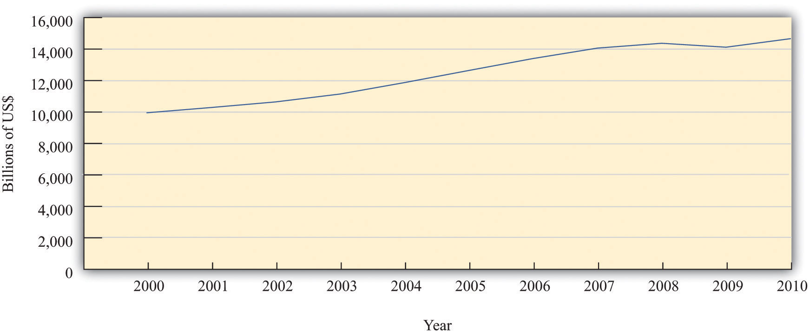
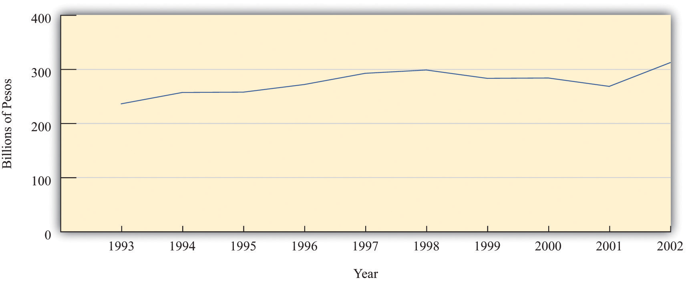
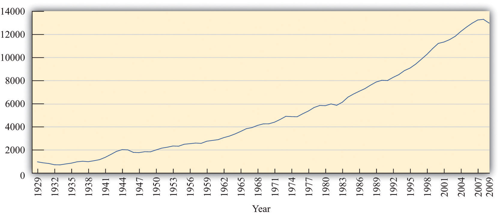
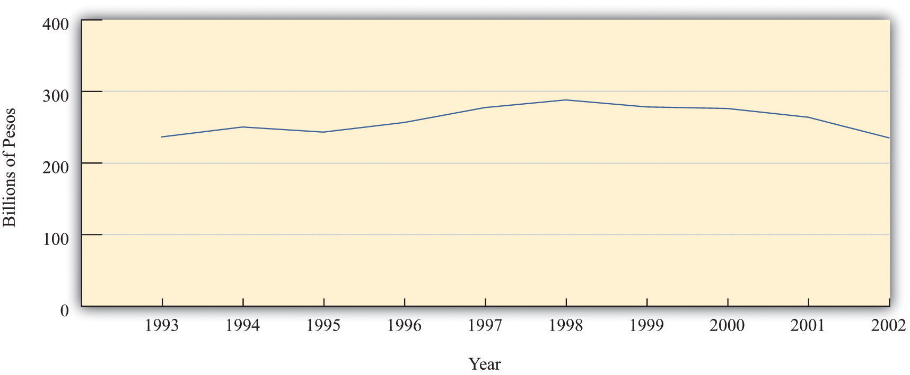

After you have read this section, you should be able to answer the following questions:
Macroeconomics is data driven. Government statisticians and other organizations gather vast amounts of data on the performance of various aspects of the macroeconomy, and macroeconomists try to make sense of all this information.
If we want to explain economic data, then we first have to get the measurement right, and a big part of this is ensuring that we get the accounting right. To make sure that we do, we begin by constructing simple examples. This is not because a simple example is enough to describe an economy; but because cannot hope to understand the complicated accounting unless we do the simple accounting correctly.
To understand the economic health of Argentina—or any other country—we begin by looking at production in the economy. Let us imagine that Argentina produces a single good—pizza. Each pizza is sold for 10 pesos (which is about US$3.33). To be concrete, suppose that every worker in the economy works in a pizza factory in which (1) each hour worked produces 1 pizza, (2) each worker works 40 hours per week, and (3) each worker works 50 weeks per year. Suppose there are about 15 million workers in the economy.
We measure total economic activity by determining the total value of the pizzas produced in this economy. We obtain this by multiplying the previous numbers together. There are
40 pizzas per worker per week,so there are
2,000 pizzas per worker per year (= 40 × 50),which means that there are
30,000,000,000 pizzas per year (= 40 × 50 × 15,000,000).The value of those pizzas is
300,000,000,000 pesos per year (= 40 × 50 × 15,000,000 × 10).The total value of all the production in the economy is called nominal gross domestic product (nominal GDP)The market value of the final goods and services produced by an economy in a given period of time.. The word nominal indicates that something is being measured in terms of money—in this case, Argentine pesos. For this economy, nominal GDP is 300 billion pesos per year.
The economy we have just described is extremely stylized and somewhat dull from a culinary perspective. We begin with such a simple economy because it allows us to understand the basic workings of the economy without getting bogged down in a lot of details. We did, however, choose numbers that are the right order of magnitude for the Argentine economy in 2002: the total number of workers in Argentina in 2002 was about 15 million, and nominal GDP was about 300 billion pesos. In 2010, estimated GDP for Argentina was 1.4 trillion pesos, and the workforce was over 16 million.
We now consider a more formal definition of nominal GDP and go through it term by term.
Nominal GDP is the market value of the final goods and services produced by an economy in a given period of time.
Our example pretended that there was only a single good produced in the economy—pizza. In real economies, millions of different goods and services are produced, ranging from cars at an assembly plant to haircuts sold by a local barber. If our goal is to measure the overall output of an economy, we are faced with the problem of how to add together these goods and services. How do you add 60,000 cubic meters of natural gas, 1,000 trucks, and 2,000 head of cattle (to pick just a few examples of goods produced in Argentina)?
We need a common denominator. Economists use the market value of the goods and services. This means that the common denominator is dollars in the United States, pesos in Argentina, kroner in Sweden, euros in Portugal, and so on. Nominal GDP equals total output produced in a year, valued at the actual market prices prevailing in that year. We choose market value for two reasons. One is simplicity: data on the market prices of goods and services are relatively easy to come by. The second reason is much more important. Market value tells us how much people are willing to pay for different goods and services, which gives us a measure of the relative value of different commodities. For example, if a new laptop computer costs $2,000 and a new hardcover novel costs $20, then the market is telling us that people are willing to trade off these goods at the rate of 100 novels to 1 laptop. In effect, the market is telling us that the laptop is 100 times more valuable than the novel.We take as given here that the market price—which tells us how much people are willing to spend—is a reasonable measure of the value of a good or a service. More precisely, it measures the value of the good or service “at the margin,” meaning it measures the value of having one more unit of the good or the service. Explaining why this is usually a sensible interpretation of the market price (and when it is not) is a topic covered in microeconomics courses.
Let’s look at an example of the calculation. Table 18.1 "Calculating Nominal GDP" considers a very small economy that produces three goods and services: T-shirts, music downloads, and meals. We show data for two years. To calculate GDP in 2012, we take the market value of the T-shirts ($20 × 10 = $200), the market value of the music downloads ($1 × 50 = $50), and the market value of the meals ($25 × 6 = $150). Adding these, we discover that nominal GDP is $400:
($20 × 10) + ($1 × 50) + ($25 × 6) = $200 + $50 + $150 = $400.Doing the same operations for 2013, we find that nominal GDP is $442:
($22 × 12) + ($0.80 × 60) + ($26 × 5) = $264 + $48 + $130 = $442.We can see that lots of things changed between the two years. The price of T-shirts and meals slightly increased, while music downloads became cheaper. Firms produced more T-shirts and music downloads but fewer meals.
Table 18.1 Calculating Nominal GDP
| Year | T-shirts | Music Downloads | Meals | Nominal GDP ($) | |||
|---|---|---|---|---|---|---|---|
| Price ($) | Quantity | Price ($) | Quantity | Price ($) | Quantity | ||
| 2012 | 20.00 | 10 | 1.00 | 50 | 25.00 | 6 | 400.00 |
| 2013 | 22.00 | 12 | 0.80 | 60 | 26.00 | 5 | 442.00 |
On the surface, 2013 appears to have been a good year in this economy. Nominal GDP increased substantially relative to 2012. Dig a little deeper, however, and it is harder to interpret this change. Production increased for some products and decreased for others. Some prices increased, and others decreased. Was 2013 really better than 2012? We come back to this question shortly.
In Table 18.1 "Calculating Nominal GDP", we assumed that all of the goods and services purchased were purchased by their final users. That is, the T-shirts, music downloads, and meals were all purchased by households for consumption purposes. (Households are not the only group that consumes final goods and services in an economy. Firms, the government, and households in other countries can also be final consumers.) We term these final goods (T-shirts) and final services (music downloads and restaurant meals).
In contrast, intermediate goods and servicesProducts that are used—and completely used up—in the production of other goods and services. are products such as raw materials and energy that are used—and completely used up—in the production of other goods and services.There are two kinds of goods used in the production of other goods. Intermediate goods are completely used up as part of the production process. Capital goods—such as factories and machines—are not completely used up but live to produce another day. We discuss capital goods in more detail in Chapter 20 "Globalization and Competitiveness". We do not include intermediate goods in GDP. Think about a bottle of wine, for example. It might be bought by a consumer at a wine store, in which case it is counted in GDP. Alternatively, it might be bought by a restaurant to sell with its meals. In this case, the cost of the meal is included in GDP, and the cost of the wine is already included in the cost of the meal. The restaurant may have purchased the wine from a supplier, but that purchase is not included as part of GDP. If both the sale of wine to the restaurant and the sale of that wine to a customer of the restaurant were counted in GDP, the same bottle of wine would be counted twice. By excluding the sale of intermediate goods in calculating GDP, we avoid such double counting.
Being intermediate is therefore not a feature of the good itself. It depends on how the good is used. Wine sold to a consumer directly is a final good; wine sold to a restaurant is an intermediate good. This fits with the idea that we want GDP to measure goods as they are valued by consumers.
Most of the time when we talk about an economy, we are speaking of a particular country. Thus we talk about US GDP, Argentine GDP, Indian GDP, or Uruguayan GDP. Similarly, most of the statistics that are collected refer to economic activity within a country. The term economy can be much more general, though, for it simply means a particular set of households and firms. We can speak of the world economy, the North Dakota economy, the Buenos Aires economy, or even the economy of a street of your hometown. The basic concepts are the same no matter what region we choose to discuss.
GDP is measured over a specified period of time. In principle, that time period could be anything—a week, a month, a quarter (three months), or a year. In the United States and many other countries, GDP is measured on a quarterly basis. However, it is typically reported on an annual basis. In other words, government statisticians might measure GDP for the first three months of 2012 and find that it was $4 trillion. That is, over that three-month period, $4 trillion worth of goods and services was produced. The number would typically be reported as “$16 trillion on an annual basis.”
It does not make any sense to talk about US GDP at the instant the clock strikes noon on February 29, 2012. The amount of GDP produced at any instant of time is, for all intents and purposes, zero. Instead, we think of GDP as a flowAny variable that has a time dimension.. We can count the number of pizzas produced only if we specify some interval of time. Other variables can be sensibly measured even at a given instant. For example, we could—in principle at least—count the number of pizza ovens in existence at any given time. The number of pizza ovens at a point in time is an example of a stockAny variable that can be measured in principle at an instant of time..
The requirement that we count goods and services produced in a certain period means that we should also ignore the resale of goods produced in earlier periods of time. If a construction company builds a new house and sells it to you, the production of that home is counted as part of GDP. By contrast, if you buy a house that is 10 years old, the sale of that house is not counted in GDP. (However, if you employed a real estate company to find the old house for you, payment to that company would be included as part of GDP.) In the same way, if you purchase a used textbook that was produced 3 years ago, that purchase is not counted in GDP.
In macroeconomics, our data come to us in the form of time series. Time series are a sequence of dated variables: GDP in 2000, GDP in 2001, GDP in 2002, and so on. Usually these data are annual, but they could also be quarterly or monthly (or even daily or hourly). If we go to the Economic Report of the President (http://www.gpoaccess.gov/eop), we can find data for nominal GDP. In the United States, the Bureau of Economic Analysis (BEA; http://www.bea.gov/national/index.htm) in the Department of Commerce is responsible for calculating nominal GDP. Table 18.2 "Nominal GDP in the United States, 2000–2010" gives an example of a time series.
Table 18.2 Nominal GDP in the United States, 2000–2010
| Year | Nominal GDP (Billions of Dollars) |
|---|---|
| 2000 | 9,951.5 |
| 2001 | 10,286.2 |
| 2002 | 10,642.3 |
| 2003 | 11,142.1 |
| 2004 | 11,867.8 |
| 2005 | 12,638.4 |
| 2006 | 13,398.9 |
| 2007 | 14,061.8 |
| 2008 | 14,369.1 |
| 2009 | 14,119.0 |
| 2010 | 14,660.2 |
It is often more revealing to show a time series as a picture rather than a list of numbers. Figure 18.3 "Nominal GDP in the United States, 2000–2010" shows the data from Table 18.2 "Nominal GDP in the United States, 2000–2010" in a graph. Looking at this figure, we see immediately that the US economy grew over these years. The level of nominal GDP (in billions) was $9.8 trillion in 2000 and $13.2 trillion in 2006.
Figure 18.3 Nominal GDP in the United States, 2000–2010
Nominal GDP in the United States grew for most of the last decade but declined in 2009.
Source: 2011 Economic Report of the President, accessed July 29, 2011, http://www.gpoaccess.gov/eop/tables11.html, Table B-1.
Let us return to your International Monetary Fund (IMF) mission in Argentina. From talking to other members of the team, you learn that the Argentine government has statistics on nominal GDP. This is good news, for it means you do have information on the total value of production in the economy. Figure 18.4 "Nominal GDP in Argentina, 1993–2002" shows nominal GDP for Argentina over the decade prior to your arrival (1993–2002). In 1993, it was 237 billion pesos. In 2002, it was 313 billion pesos. Thus nominal GDP grew by about one-third over the course of the decade.
Figure 18.4 Nominal GDP in Argentina, 1993–2002
The graph shows nominal GDP in Argentina between 1993 and 2002. Nominal GDP grew overall during this period, although it decreased for several years in the second half of the decade.
Source: International Monetary Fund World Economic Outlook database (http://www.imf.org/external/pubs/ft/weo/2010/01/index.htm).
Now suppose that in your hotel room one morning you hear on the radio that government statisticians in Argentina forecast that nominal GDP next year will be 300 million pesos greater than this year. How should you interpret this news? Without some context, it is difficult to make any judgment at all.
The first thing to do is to work out if 300 million pesos is a big number or a small number. It certainly sounds like a big number or looks like a big number if we write it out in full (300,000,000). If we stacked 300 million peso bills on top of each other, the pile would be over 100 miles high. But the real question is whether this is a big number relative to existing nominal GDP. We have been told that the change in nominal GDP is 300 million, but we would like to know what this is as a growth rateThe change in a variable over time divided by its value in the beginning period., which is a percentage change.
Toolkit: Section 31.21 "Growth Rates"
A growth rate is a percentage change in a variable from one year to the next. That is, a growth rate is the change in a variable over time divided by its value in the beginning period.
For example, the growth rate of GDP is calculated as follows:
In our example for Argentina, the percentage change is equal to the change in nominal GDP divided by its initial value. Remember than nominal GDP in 2002 was about 300 billion pesos, so
When we express this change in nominal GDP as a percentage, therefore, we see that it is in fact very small—one-tenth of 1 percent. If you heard on the radio that nominal GDP was expected to grow by 300 million pesos in a 300-billion peso economy, the correct conclusion would be that nominal GDP would hardly change at all. By contrast, if the news announced a projected increase in nominal GDP of 30 billion pesos, the percentage change is 30 billion/300 billion = 0.1 = 10 percent. This is a substantial change in nominal GDP.
In your bid to understand the economy of Argentina, you have seen that nominal GDP increased by one-third between 1993 and 2002. One possibility is that Argentina is producing one-third more pizzas than it was a decade ago—30 billion pizzas instead of 22.5 billion pizzas. This would be good news. Producing more pizzas is something we would normally think of as a good thing because it means that we are experiencing economic growth: there are more goods and services for people to consume.
In talking to people about the Argentine economy, however, you learn something disconcerting. They tell you that the prices of goods and services are greater this year than they were last year and much greater than they were a decade ago. You begin to wonder: perhaps Argentina is producing no more pizzas than before but instead pizzas have become one-third more expensive than they formerly were. We would typically feel very differently about this outcome. Yet another possibility is that there has been an increase in both the number of pizzas produced and the price of pizza, and the combined effect doubled nominal GDP. We need a way of distinguishing among these different possibilities.
In our pizza economy, it is easy to tell the difference between an increase in production and an increase in prices. We can measure increased production by counting the number of pizzas, and we can measure increased prices by looking at the price of a pizza. We call the number of pizzas real gross domestic product (GDP)A measure of production that has been corrected for any changes in overall prices. (the word real here indicates that we are effectively measuring in terms of goods and services rather than dollars), and we call the price of a pizza the price levelA measure of average prices in the economy. in the economy.
Then it follows that
nominal GDP = price level × real GDP.In our example, the price level is 10 pesos, and real GDP is 30 billion pizzas. Multiplying these numbers together, we find that nominal GDP is indeed 300 billion pesos. Sometimes, for shorthand, we use the term price to mean the price level in a given year and the term output to mean real GDP in a given year.
Real GDP is the variable that most interests us because it measures the quantity of goods and services produced in an economy. We would therefore like to find a way to decompose nominal GDP into the price level and the level of real GDP in actual economies. But real economies produce lots of different goods and services, the prices of which are continually changing. In addition—unlike our fictional economy, where it makes sense to measure real GDP as the number of pizzas—there is no “natural unit” for real GDP in an actual economy.
In fact, even in our pizza economy, there is still an arbitrariness about the units. Imagine that we cut each pizza into 10 slices. Then we could just as easily say that real GDP is 300 billion pizza slices instead of 30 billion pizzas, but that the price level—the price per slice—is 1 peso. We would still conclude that nominal GDP—the number of slices multiplied by the price per slice—was 300 billion pesos.
So is it possible to say, in a real economy producing multiple goods and services, that nominal GDP is equal to the product of the price level and the level of real GDP? Does it still make sense to write
nominal GDP = price level × real GDPas we did for the pizza economy? The answer, as it turns out, is yes.
To see how this works, we begin by looking at how prices and output change from one year to another. Specifically, we divide 2013 nominal GDP by 2012 nominal GDP. This is one measure of the growth in nominal GDP from 2012 to 2013.Specifically, this measures the gross growth rate of nominal GDP. It is equal to 1 + the percentage change in nominal GDP. See the toolkit for details of the mathematics of growth rates. Remember that nominal GDP equals total output produced in a year, valued at the prices prevailing in that year. Comparing nominal GDP in 2012 and 2013 therefore gives us
Now we use a trick. Multiply above and below the line by “output in 2013 valued at 2012 prices” and then rearrange:
Look carefully at this calculation to make sure you understand what we did here.
Now examine the two ratios on the right-hand side of the second line. The first compares the cost of the same bundle of goods (output in 2013) at two different sets of prices—those prevailing in 2013 and those prevailing in 2012. Think of the bundle as being a grocery cart full of goods. If you compare how much it costs to buy exactly the same collection of goods at two different times, you have a measure of what has happened to prices.
The second ratio on the right-hand side is a measure of the increase in real GDP. It uses the same prices to compare the value of output in 2012 and 2013. In other words, it tells you how much it costs to buy two different collections of goods at exactly the same prices.
To reiterate, the first ratio compares the same bundle of goods at two different sets of prices. The second ratio compares two different bundles of goods at the same prices. We have succeeded in separating the change in nominal GDP into two components: a price change and a change in real GDP.
We can illustrate this technique using the data in Table 18.1 "Calculating Nominal GDP". In that example, the growth in nominal GDP equals 10.5 percent because
Now we choose an arbitrary year that we call the base year. For the base year, we set the price level equal to 1. In our calculations, we choose 2012 as our base year. Because nominal GDP equals the price level times real GDP, this means that real GDP in 2012 is $400.
When we choose 2012 as our base year, we use the prices of T-shirts, music downloads, and meals in 2012 for our calculations of real GDP for 2012 and 2013. Table 18.3 "Real GDP Using 2012 as the Base Year" shows what we find. The first row is exactly the same as in Table 18.1 "Calculating Nominal GDP". Nominal GDP in 2012 is—by definition—the same as real GDP in 2012 because we are using 2012 as the base year. The second row of the table calculates real GDP for 2013; it uses 2013 quantities but 2012 prices. Notice also the heading in the final column of the table: “Real GDP (Year 2012 dollars).” The term in parentheses tells us that everything is being measured according to the prices that prevailed in our base year of 2012.
Table 18.3 Real GDP Using 2012 as the Base Year
| Year | T-shirts | Music Downloads | Meals | Real GDP (Year 2012 Dollars) | |||
|---|---|---|---|---|---|---|---|
| 2012 Price ($) | Quantity | 2012 Price ($) | Quantity | 2012 Price ($) | Quantity | ||
| 2012 | 20 | 10 | 1 | 50 | 25 | 6 | 400 |
| 2013 | 20 | 12 | 1 | 60 | 25 | 5 | 425 |
We previously calculated that 2013 nominal GDP—output in 2013 valued at 2013 prices—was $442. By contrast, Table 18.3 "Real GDP Using 2012 as the Base Year" shows that, when valued in year 2012 dollars, the total output of this economy in 2013 is $425. In other words,
Nominal GDP increased by 10.5 percent between the two years, but real GDP is increased by only 6.25 percent. From this we see that not all of the increase in nominal GDP is due to increased output. Some of the increase is because prices increased between 2012 and 2013.
In our pizza economy, we said that nominal GDP was equal to the price per pizza multiplied by the quantity of pizza. In our example here, we have calculated something very similar. Nominal GDP equals the price level multiplied by real GDP. In the base year, the price level equals 1 (that is what it means to choose the base year), and so real GDP equals nominal GDP in that year. Because we can calculate the increase in the price level and the increase in real GDP from one year to the next, we can obtain a time series for the price level and a time series for real GDP. In each year, nominal GDP equals the price level in that year times real GDP in that year.
There is, however, one difference between the calculation for our pizza economy and measurement in real economies. In the pizza economy, because there was a single good, we were able to measure real GDP in physical units—the number of pizzas. In real economies, there is no single good, and so we measure real GDP in base year dollars rather than as a physical quantity. The price level in, say, 2013 is not, strictly speaking, the price of real GDP in terms of 2013 dollars but rather is the price of a base year dollar in terms of 2013 dollars.
But this is a technical difference. From an intuitive point of view, it is simplest to think about real GDP as being a physical quantity—a number of pizzas. In this book we therefore imagine that real GDP is actually a bundle of goods and services all melded together to create a composite good. We call that good “units of real GDP,” and we call the price level the price of a unit of GDP. In fact, we could think about the pizza economy in that same way. Even a basic pizza is itself composed of dough, sauce, and cheese: it is a bundle of items melded into one. So when we talk about the physical quantity of pizza, we are really talking about the number of bundles of these ingredients. Likewise, when we talk of real GDP, we are talking about a bundle of goods that we measure in base year dollars.
Real GDP is our most basic measure of economic performance. It is a very broad measure because it tells us how much economic activity of any kind (at least, any kind that we can measure) is going on in our economy. Real GDP tells us how much we have produced of all the different goods and services that people enjoy and want to consume. For this reason, real GDP statistics are among the most closely watched of all the figures released by a government.
Figure 18.5 "Real GDP in the United States, 1929–2009" shows real GDP for the US economy from 1929 to 2008 in year 2000 dollars. The figure shows that the US economy grew substantially over those years. The level of real GDP was $865.2 in 1929 and $10,842 in 2008 (in billions of $2000).If you look at this figure, you will see that real GDP is listed as “chain weighted.” This method of calculating real GDP averages growth rates by using different base years. By averaging, this measure has the virtue that calculations of real GDP are less sensitive to the selection of an arbitrary base year. For more information on chain-weighted measures, see Charles Steindel, “Chain-Weighting: The New Approach to Measuring GDP,” Current Issues in Economics and Finance 1, no. 9 (1995): 1–6, accessed June 28, 2011, http://www.newyorkfed.org/research/current_issues/ci1-9.pdf.
Figure 18.5 Real GDP in the United States, 1929–2009
Figure 18.6 "Real GDP (in 1993 Pesos) in Argentina in the 10 Years Prior to 2002" shows real GDP in Argentina and thus reveals that our earlier data for nominal GDP were indeed misleading. Nominal GDP may have increased between 1993 and 2002, but real GDP in 2002 was at the same level as in the previous decade. Moreover, real GDP had been decreasing for the prior four years before the IMF visit.
Figure 18.6 Real GDP (in 1993 Pesos) in Argentina in the 10 Years Prior to 2002
Real GDP in Argentina was essentially flat between 1993 and 2002.
Source: International Monetary Fund World Economic Outlook database (http://www.imf.org/external/pubs/ft/weo/2010/01/index.htm).
This helps you to make sense of your contradictory impressions of Buenos Aires. Argentina became poorer, not richer, in the late 1990s and early 2000s. The presence of luxury goods stores, for example, is a reminder that Argentina was a relatively rich country, but the absence of shoppers in those stores tells you that people are not feeling very rich at this time.